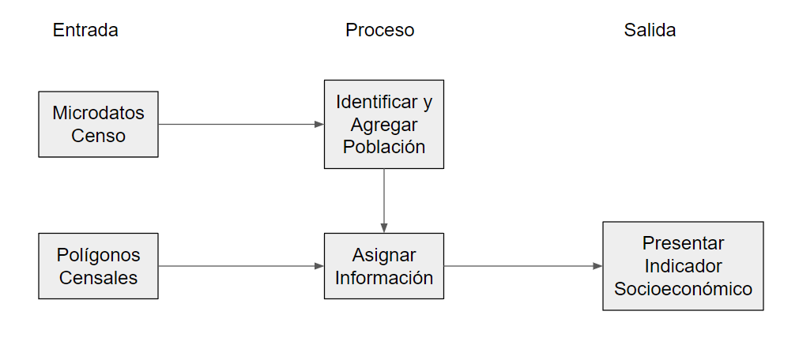
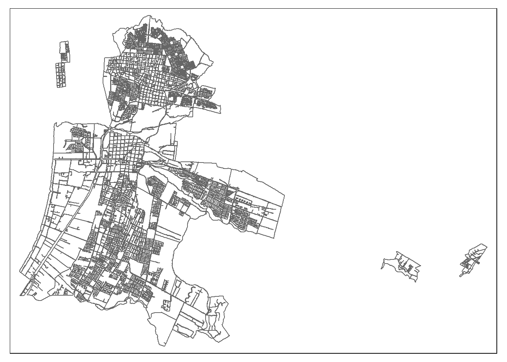
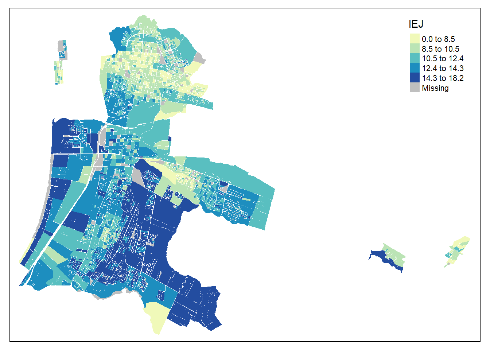
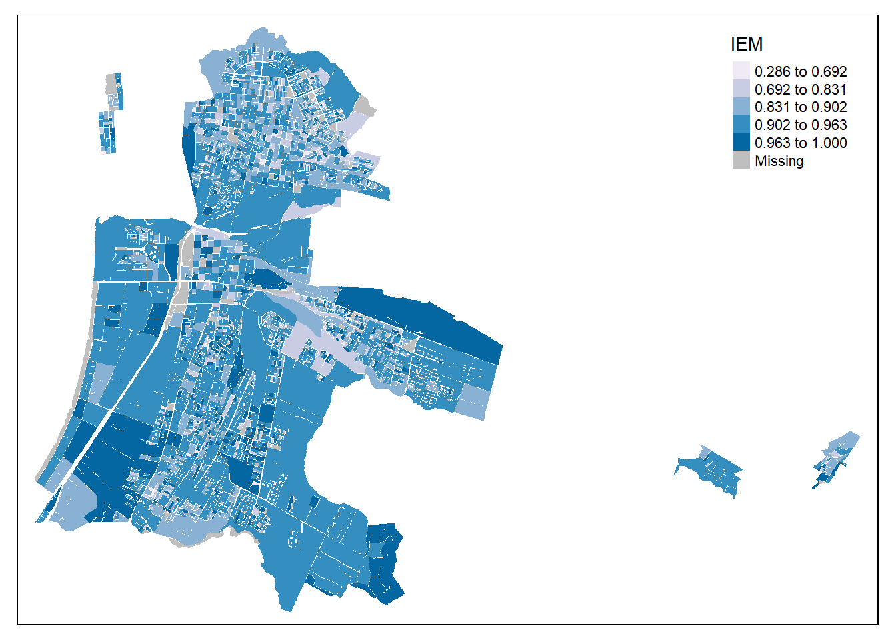
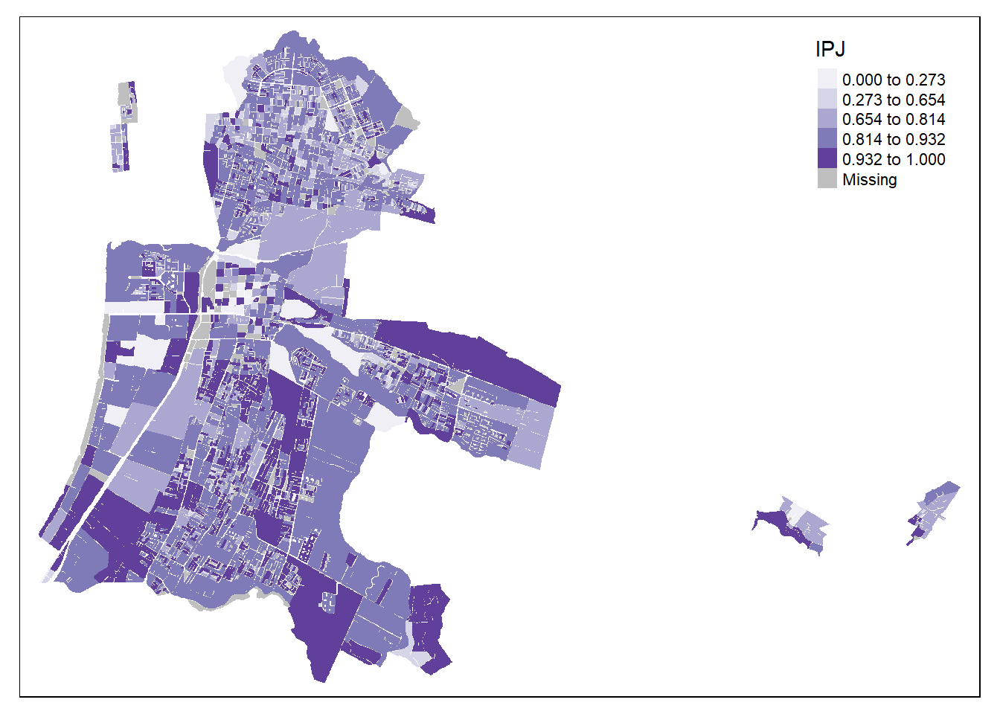
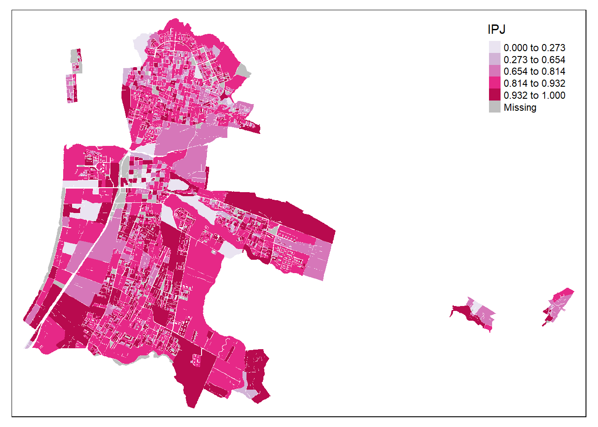
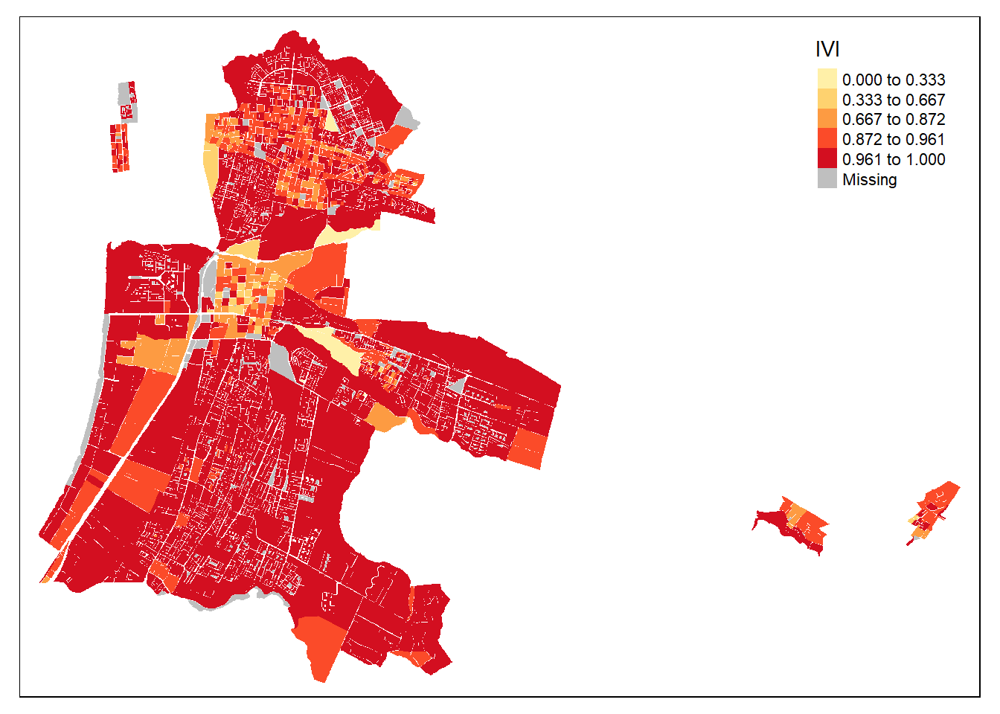
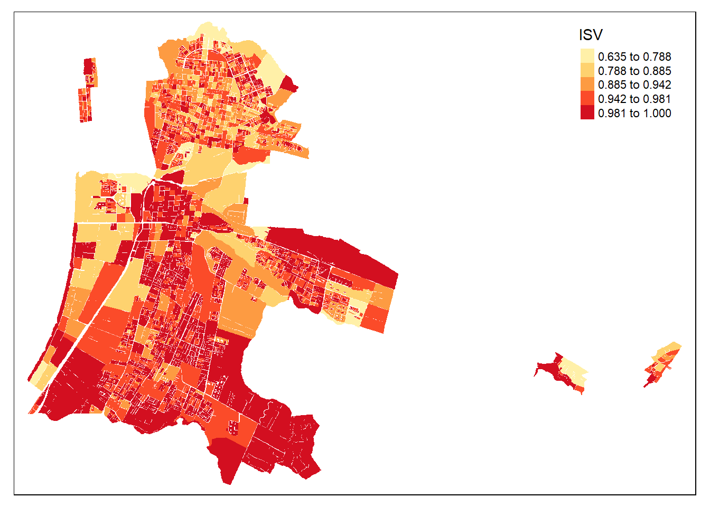

# Carga de librerías
library(sf)
library(dplyr)
library(mapview)
library(kableExtra)
library(ggplot2)
require(knitr)
library(viridis)
library(tidyr)
library(tmap)2 Dimensión Socioeconómica
2.1 Resumen
Las ciudades de Chile presentan altos índices de segregación (Sabatini, C’aceres, and Cerda 2001), que reflejan la separación espacial de distintos grupos sociales (Ruiz-Tagle and L’opez M 2014). La intensidad de este fenómeno hace imperativo el considerar la condición social como una dimensión estructurante en la evaluación de Políticas Públicas.
Para representar el nivel de recursos con los que cuentan las personas en los territorios, los cuales afectan las oportunidades de bienestar que pueden alcanzar, se consideran indicadores que representan el nivel de educación que tienen los jefes de hogares, y la participación laboral de las personas y jóvenes. Además se busca representar la estructura de los hogares, y las condiciones materiales de la vivienda, respecto de hacinamiento y calidad material.
El listado de indicadores considerado en esta dimensión comprende:
IEM: Índice de Empleo
IEJ: Índice de Escolaridad del Jefe de Hogar
IPJ: Índice de Participación Juvenil
IRH: Índice de Resilencia de los Hogares
ISV: Índice de Suficiencia de la Vivienda.
IVI: Índice de Calidad de la Vivienda.
2.2 Insumos
El proceso de cálculo de estos indicadores considera como insumo los datos del último censo disponible, en este caso el Censo de 2017 realizado por el Instituto Nacional de Estadísticas (INE).
Este levantamiento exhaustivo de los hogares, viviendas y personas residentes en el país entrega información en tablas llamadas Microdatos como en agregaciones espaciales, resumidas en polígonos censales en una estructura anidada de acuerdo a la división político administrativa del país.
2.3 Proceso
El proceso de cálculo de estos indicadores considera el trabajo con las tablas de microdatos buscando identificar personas, hogares, o viviendas que cumplan con ciertas características de interés, y luego agregarlas a la menor escala territorial disponible para calcular una proporción relevante de acuerdo al indice en cuestión. Este proceso se puede resumir en el siguiente diagrama:

2.4 Aplicación
A continuación se ilustra el cálculo de estos indicadores usando el lenguaje de programación R:
2.4.1 Definir entorno de trabajo
Para trabajar el cálculo de los indicadores es necesario definir las librerías que contienen las funcionalidades que permiten un mejor manejo del proceso de datos y de la presentación cartográfica de los indicadores:
A partir de esto se cargan datos de ejemplo, en este caso corresponden a la información censal a nivel de manzanas para la región de Coquimbo:
# Carga de insumos
censo <- st_read("data/R04_INSUMO_SOCIOECONOMICO.shp", quiet = T)Podemos acceder al listado de variables que se encuentran en esta base de datos. Esta comprende variables de identificación, códigos de manzana, pertenencia a regiones o comunas, o territorio rural o urbano. Además, tiene un resumen de conteo de respuestas a preguntas del censo, codificadas con una P al comienzo, además de conteo de hogares o personas bajo cierta condición:
# Visualizacion de tabla de datos
glimpse(censo)Rows: 12,251
Columns: 36
$ ID_MANZ <chr> "4101071001900", "4101071001900", "4102101001900", "4102101…
$ MANZ_EN <chr> "URBANO", "URBANO", "URBANO", "URBANO", "URBANO", "URBANO",…
$ NOM_COM <chr> "LA SERENA", "LA SERENA", "COQUIMBO", "COQUIMBO", "COQUIMBO…
$ COD_COM <dbl> 4101, 4101, 4102, 4102, 4102, 4106, 4106, 4106, 4101, 4101,…
$ NOM_REG <chr> "REGIÓN DE COQUIMBO", "REGIÓN DE COQUIMBO", "REGIÓN DE COQU…
$ COD_REG <dbl> 4, 4, 4, 4, 4, 4, 4, 4, 4, 4, 4, 4, 4, 4, 4, 4, 4, 4, 4, 4,…
$ NOM_PROV <chr> "ELQUI", "ELQUI", "ELQUI", "ELQUI", "ELQUI", "ELQUI", "ELQU…
$ COD_PROV <dbl> 41, 41, 41, 41, 41, 41, 41, 41, 41, 41, 41, 41, 41, 41, 41,…
$ ZONA <chr> "4101071001", "4101071001", "4102101001", "4102101001", "41…
$ ID_MANZCIT <chr> "4101071001900001", "4101071001900002", "4102101001900001",…
$ AREA <dbl> 2873.376, 1256.480, 1230.344, 3877.142, 34392.873, 4033.107…
$ TOTAL_V <dbl> 0, 0, 0, 0, 0, 0, 0, 0, 27, 15, 35, 27, 25, 32, 31, 26, 31,…
$ HOG_N <dbl> 0, 0, 0, 0, 0, 0, 0, 0, 25, 15, 34, 24, 26, 29, 31, 27, 29,…
$ PERSONAS <dbl> 0, 0, 0, 0, 0, 0, 0, 0, 72, 57, 132, 82, 85, 96, 106, 92, 1…
$ E4A18 <dbl> 0, 0, 0, 0, 0, 0, 0, 0, 9, 11, 26, 19, 11, 12, 19, 16, 19, …
$ E15A24 <dbl> 0, 0, 0, 0, 0, 0, 0, 0, 9, 6, 17, 10, 18, 16, 14, 20, 13, 5…
$ ESCOLAR <dbl> 0.0, 0.0, 0.0, 0.0, 0.0, 0.0, 0.0, 0.0, 9.1, 9.6, 9.1, 9.4,…
$ P03A_4 <dbl> 0, 0, 0, 0, 0, 0, 0, 0, 0, 0, 1, 2, 2, 3, 1, 0, 8, 0, 0, 2,…
$ P03A_5 <dbl> 0, 0, 0, 0, 0, 0, 0, 0, 1, 0, 0, 0, 0, 0, 2, 0, 0, 0, 0, 0,…
$ P03A_6 <dbl> 0, 0, 0, 0, 0, 0, 0, 0, 0, 0, 0, 0, 0, 0, 0, 1, 0, 0, 0, 0,…
$ P03B_4 <dbl> 0, 0, 0, 0, 0, 0, 0, 0, 0, 0, 0, 1, 0, 0, 0, 0, 0, 0, 0, 0,…
$ P03B_6 <dbl> 0, 0, 0, 0, 0, 0, 0, 0, 0, 0, 0, 0, 0, 0, 0, 0, 1, 0, 0, 1,…
$ P03B_7 <dbl> 0, 0, 0, 0, 0, 0, 0, 0, 0, 0, 0, 0, 0, 0, 0, 0, 0, 0, 0, 0,…
$ P03C_4 <dbl> 0, 0, 0, 0, 0, 0, 0, 0, 0, 0, 0, 0, 0, 3, 1, 2, 4, 0, 0, 0,…
$ P03C_5 <dbl> 0, 0, 0, 0, 0, 0, 0, 0, 0, 0, 0, 0, 0, 0, 0, 0, 1, 0, 0, 0,…
$ NIV_HAC2 <dbl> 0, 0, 0, 0, 0, 0, 0, 0, 0, 1, 5, 2, 1, 4, 1, 1, 2, 1, 0, 2,…
$ NIV_HAC3 <dbl> 0, 0, 0, 0, 0, 0, 0, 0, 0, 0, 0, 0, 0, 0, 0, 0, 0, 0, 0, 1,…
$ HOMBRES <dbl> 0, 0, 0, 0, 0, 0, 0, 0, 36, 29, 70, 39, 39, 46, 52, 39, 53,…
$ MUJERES <dbl> 0, 0, 0, 0, 0, 0, 0, 0, 36, 28, 62, 43, 46, 50, 54, 53, 48,…
$ MONOPAR <dbl> 0, 0, 0, 0, 0, 0, 0, 0, 4, 0, 8, 2, 2, 2, 4, 2, 5, 1, 1, 3,…
$ P17_ACT <dbl> 0, 0, 0, 0, 0, 0, 0, 0, 32, 20, 56, 34, 35, 42, 45, 42, 37,…
$ P17_4 <dbl> 0, 0, 0, 0, 0, 0, 0, 0, 2, 1, 6, 0, 6, 5, 6, 7, 7, 1, 7, 9,…
$ J_NINI <dbl> 0, 0, 0, 0, 0, 0, 0, 0, 0, 1, 2, 1, 5, 2, 2, 3, 2, 1, 0, 5,…
$ JH_HASTA_P <dbl> 0, 0, 0, 0, 0, 0, 0, 0, 13, 5, 13, 8, 9, 12, 14, 9, 12, 2, …
$ JH_HASTA_S <dbl> 0, 0, 0, 0, 0, 0, 0, 0, 10, 8, 16, 14, 11, 14, 14, 18, 13, …
$ geometry <POLYGON [m]> POLYGON ((292811 6685815, 2..., POLYGON ((293056 66…La información geográfica está también en esta base de datos en la columna geometry, la cual a modo de demostración, podemos representar la comuna de La Serena:
# filtro comuna y area urbana
la_serena_urb <- censo %>% filter(COD_COM == 4101 & MANZ_EN == "URBANO")
# Visualizacion de polígonos
tm_shape(la_serena_urb) + tm_borders()
2.4.1.1 Indicador de Escolaridad del Jefe de Hogar (IEJ)
Para la construcción de este indicador se utilizó el promedio de años de estudio de jefes de hogar (EJH), que es una variable censal numérica (“ESCOLARIDAD”, en tabla de personas del censo 2017) que registra el nivel del curso más alto aprobado, medida en años sucesivos desde la enseñanza básica hasta estudios de postgrado.
Se calcula el promedio de esta variable para todos los jefes de hogar en cada manzana. Esta variable es representativa del capital cultural de cada hogar y está altamente correlacionada con el nivel de ingresos en Chile (Agostini et al. 2016).
En este caso el indicador ya venía calculado desde las tablas de microdatos a nivel de agregación de manzana. Por lo que el proceso implica “limpiar”, asegurandose de que cuando la población de la manzana es cero, el indicador se indefine.
# Calculo
censo <- censo %>% mutate( IEJ = ifelse(PERSONAS ==0, NA, ESCOLAR))Para visualizar se filtra la comuna de la Serena en su área urbana.
# filstro comunal y urbano
la_serena_urb <- censo %>% filter(COD_COM == 4101 & MANZ_EN == "URBANO")
# Viz
tm_shape(la_serena_urb) + tm_fill("IEJ", style = "jenks", palette = "YlGnBu")
2.4.1.2 Indicador de Empleo (IEM)
Para este indicador se usó la proporción de población activa sin empleo que es la fracción de las personas que no tienen empleo y están buscando uno, respecto al total de personas en condiciones y con deseo de trabajar en cada manzana.
Esta variable es similar al cálculo de desempleo, pero calculada a escala de manzanas y en un tiempo específico, por lo que representa las brechas potenciales que existen para acceder al empleo en barrios específicos.
Para calcular este indicador se usan las siguientes variables:
P17_4: Trabajo la semana pasada, opción 4: “Se encontraba buscando empleo”
P17_ACT: Total de Actividades Remuneradas (no es pregunta del Censo)
Además, se invierte el indicador para que los valores más bajos que representan mayor integración laboral se asocien a valores mayores.
# Calculo
censo <- censo %>% mutate( CESA_DENS = P17_4 / P17_ACT)
censo <- censo %>% mutate( IEM = 1 - CESA_DENS )# filtro urbano
la_serena_urb <- censo %>% filter(COD_COM == 4101 & MANZ_EN == "URBANO")
# Viz
tm_shape(la_serena_urb) + tm_fill("IEM", style="jenks", palette="PuBu")
2.4.1.3 Indicador de Participación Juvenil en Empleo y Estudio (IPJ)
Para la construcción de este indicador se utilizó la proporción de jóvenes entre 14 y 24 años que no trabajan ni estudian: es la fracción de jóvenes en este rango edad que no trabajan ni estudian, respecto al total de este segmento etario en cada manzana.
Esta variable representa un riesgo de exclusión socioeconómica en el período de transición entre el ambiente educativo y el laboral, siendo característico de trayectorias de deserción escolar que conducen al desempleo y que podrían incrementar el riesgo de adopción de comportamientos delictivos (de Desarrollo Social 2019).
Luego, el indicador se normalizó con su inverso aditivo, para asegurar que el valor máximo, sea lo más deseable y el 0 lo menos deseable, convirtiéndose así en un indicador de empleo.
Para el cálculo de este indicador se usan las siguientes variables:
J_NINI: Jóvenes que no trabajan ni estudian
E15A24: Jóvenes entre 15 y 24 años de edad
Nuevamente estas variables ya están procesadas a partir de la tabla de microdatos.
# Calculo
censo <- censo %>% mutate( NINI_DENS = J_NINI / E15A24)
censo <- censo %>% mutate( NINI_DENS = ifelse(NINI_DENS > 1, 1, NINI_DENS))
censo <- censo %>% mutate( IPJ = 1 - NINI_DENS )# filtro comunal y urbano
la_serena_urb <- censo %>% filter(COD_COM == 4101 & MANZ_EN == "URBANO")
# Viz
tm_shape(la_serena_urb) + tm_fill("IPJ", style="jenks", palette = "Purples")
2.4.1.4 Indicador de Resilencia de los Hogares (IRH)
En particular, la monoparentalidad es ampliamente reconocida en la literatura internacional como una situación familiar frágil, que puede afectar las trayectorias de vida de los hijos, en términos de un mayor riesgo de mortalidad (Amato and Patterson 2017), inestabilidad psicológica (Theodoritsi and Daliana 2018), problemas de salud (Duriancik and Goff 2019) y otros.
En suma, el Indicador de Resiliencia de Hogares (en base a la monoparentalidad), en complemento a otras variables, es conceptualmente relevante para evaluar riesgos no monetarios de condiciones sociales.
Este indicador es el inverso aditivo de la proporción de hogares monoparentales dentro de una manzana. Los hogares monoparentales son aquellos con hijos que viven con un solo progenitor, lo que se asocia en diversas formas a la condición social, que abarcan desde un menor ingreso, problemas de salud y delincuencia, entre otros (de Desarrollo Social 2019).
Al contrario, los hogares biparentales permiten el apoyo entre progenitores y los hogares sin hijos tienen menores exigencias de gasto y tiempo relacionadas con la paternidad, por lo que se considera que en general son más resilientes.
Para calcular este indicador se usan las siguientes variables:
MONOPAR: Suma de Hogares Monoparentales
HOG_N: Suma de Hogares
# Calculo
censo <- censo %>% mutate( MONO_DENS = MONOPAR / HOG_N)
censo <- censo %>% mutate( MONO_DENS = ifelse(MONO_DENS > 1, 1, MONO_DENS))
censo <- censo %>% mutate( IRH = 1 - MONO_DENS)# filtro comunal y urbano
la_serena_urb <- censo %>% filter(COD_COM == 4101 & MANZ_EN == "URBANO")
# Viz
tm_shape(la_serena_urb) + tm_fill("IPJ", style="jenks", palette = "PuRd")
2.4.1.5 Indicador de Calidad de la Vivienda (IVI)
El indicador de calidad de vivienda es una variable sintética de todas las materialidades de la vivienda. Inicialmente, se construyó como un indicador de mala calidad, tomando un valor más alto cuando la calidad de la vivienda es peor y es más bajo cuando es mejor. Fue elaborado como un promedio lineal del 3 sub-indicadores de paredes, suelo y techo. Cada uno de estos sub-indicadores registra el porcentaje de viviendas de la manzana que tienen paredes, suelo o techo considerado insuficiente. Las construcciones consideradas insuficientes son las siguientes:
Paredes: Material de los muros exteriores
P03A_4: Tabique sin forro interior (madera u otro)
P03A_5: Adobe, barro, quincha, pirca u otro artesanal tradicional
P03A_6: Materiales precarios (lata, cartón, plástico, etc.)
Techo: Material en la cubierta del techo
P03B_4: Fonolita o plancha de fieltro embreado
P03B_6: Materiales precarios (lata, cartón, plásticos, etc.)
P03B_7: Sin cubierta sólida de techo
Suelo: Material de construcción del piso
P03C_4: Capa de cemento sobre tierra
P03C_5: Tierra
censo <- censo %>%
mutate(paredes = (P03A_4 + P03A_5 + P03A_6)/TOTAL_V,
techo = (P03B_4 + P03B_6 + P03B_7)/TOTAL_V,
suelo = (P03C_4 + P03C_5)/TOTAL_V)
# eliminar valores infinitos de la división anterior
censo <- censo %>%
mutate(paredes = ifelse(paredes > 1, 1, paredes),
techo = ifelse(techo > 1, 1, techo),
suelo = ifelse(suelo > 1, 1, suelo))
censo <- censo %>% mutate(IVI = (paredes+ suelo+ techo)/3)
censo <- censo %>% mutate(IVI = 1 - IVI) # invertir sentido# filtro comunal y urbano
la_serena_urb <- censo %>% filter(COD_COM == 4101 & MANZ_EN == "URBANO")
# Viz
tm_shape(la_serena_urb) + tm_fill("IVI", style="jenks", palette = "YlOrRd")
2.4.1.6 Indicador de de Suficiencia de la Vivienda (ISV)
El indicador de Suficiencia de Viviendas se construyó inicialmente como un indicador de hacinamiento. Se realizó a partir de 2 variables que indican el número de viviendas que se encuentran en situación de hacinamiento y el número de viviendas que se encuentran en situación de hacinamiento severo. El indicador corresponde a la suma de 2 veces las viviendas en situación de hacinamiento severo con las viviendas en situación de hacinamiento normal, dividido por el total de viviendas.
Luego, el indicador se normalizó con su inverso aditivo, para asegurar que el valor máximo, sea lo más deseable y el 0 lo menos deseable. Con esto se obtuvo el indicador de suficiencia de viviendas.
El calculo de este indicar implica diferenciar las viviendas en situación de hacinamiento y hacinamiento severo, lo que se operacionaliza en las siguientes variables:
NIV_HAC2: >= 2.5 personas por habitación
NIV_HAC3: >= 5 personas por habitación
# Calculo
censo <- censo %>% mutate(ISV = NIV_HAC2 + (2 * NIV_HAC3))
# función de normalización
minmax <- function(x) {
x <- (x - min(x, na.rm = TRUE)) /
(max(x, na.rm = TRUE) - min(x, na.rm = TRUE))
return(x)
}
censo <- censo %>% mutate(ISV = 1 - minmax(ISV))# filtro comunal y urbano
la_serena_urb <- censo %>% filter(COD_COM == 4101 & MANZ_EN == "URBANO")
# Viz
tm_shape(la_serena_urb) + tm_fill("ISV", style="jenks", palette = "YlOrRd")